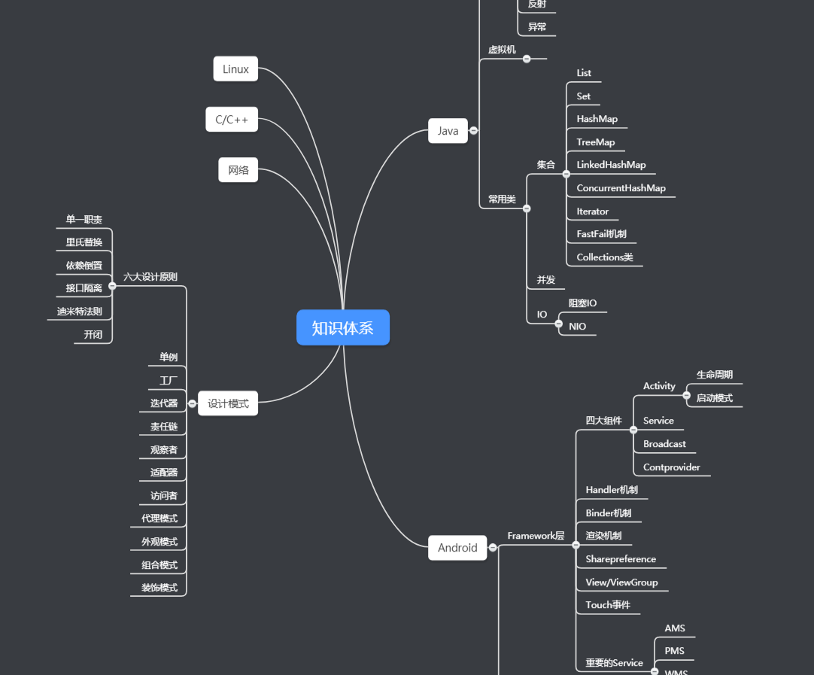
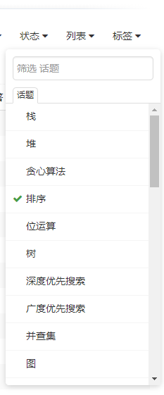

你好，我是孙鹏飞。又到了传统的“金三银四”换工作的高峰期，在互联网寒冬下，抓住机会就显得尤为重要了。那作为 Android 工程师我们应该从哪些方面去准备呢？例如，不太熟悉的技能要不要写在简历上、要复习哪些 Android 组件的知识、刷算法题目有没有用，可能在面试前你都会仔细考虑这些问题。下面我就结合自身的经验和理解，帮你梳理一下关于简历、面试和算法方面需要准备的内容，分享一些我的心得体会。
简历
简历在面试过程会起到至关重要的作用，我们需要非常注意简历的撰写。
在面试的过程中，面试官通常会非常关注你简历中的工作经历、项目介绍、技能特长这三部分的内容，如果你面试的公司没有固定题目的话，那很多问题都会围绕你简历里这三部分内容去问。这里需要注意的一点是相关技能的书写，首先你要让面试官明确你面试的定级是什么。很多时候一个职位对应了很多个职级，在投简历的时候，你的简历需要让面试官给你一个比较明确的定级，否则面试过程会比较被动，也会影响面试官对你的判断。因此这部分的内容需要突出自己的特长，也要写一些现在公司相对关心的问题，比如你对插件化、热修复、组件化、性能优化等很熟悉，就可以明确的写上，但如果不是很熟悉那么尽量不要去写。如果你对 Android 某部分内容很熟悉就可以写得相对详细一些，比如你对 Handler、Binder 机制很熟悉，就可以写“熟悉 Android 常见机制，比如 Handler、Binder 机制等”。而看到你很熟悉这部分内容，面试官可能在问问题时一层层深入，因此你肯定需要提前准备一下这部分内容如何讲解，基本可以从机制的优点、重点、难点三方面去说明。
关于项目介绍主要体现你在这个项目或者这个团队中的作用，突出自己的贡献和项目的难点。很多同学可能在公司一直做需求的开发，会觉得自己的项目经验没有亮点，难度也没有那么大，会觉得在这部分内容上比较吃亏。其实每个需求下来的时候你肯定会对这个需求有一个自己的设计，在这个过程中你会考虑如何对现有代码的影响最小，如何快捷清晰的实现功能，以及在开发过程中对组件、控件的封装，考虑如何优化性能，有没有新的技术可以帮助开发这个需求的…我想我们每个需求都是通过一系列的考量和设计后才实施的，你可以回去翻一下自己的代码，然后考虑一下如何把你的这些设计和思考体现在简历上，同样也是个不错的说明。
面试
对于 Android 工程师来说，面试开始的时候都会问一些算法和 Android、Java 的基础知识。针对 Java 的基础知识，我建议你看一下《码出高效：Java 开发手册》《深入理解 Java 虚拟机》《Java 并发编程的艺术》这三本书。对于 Android 的面试题，大多都是跟系统原理有关的内容，但也有很多没有准确答案的问题，比如四大组件的原理这样的题目，需要你从一个宏观的角度去解释一下四大组件，或者你也可以拆分开一个个去讲解。
在面试前你需要提前准备一下，避免回答问题的时候没有条理，导致面试官对你的逻辑思维能力和语言表达能力产生不好的判断。一些 Android 经常使用到的组件一定要理解清楚，比如 Handler.postDelay 的机制、触摸事件机制、自定义 View、如何计算 View 大小、容器控件如何对子控件进行布局、数据库基本操作、Binder 机制、LMK 机制等。还有面试官也可能会问一些开源框架的原理，我建议你也要多了解一些优秀的网络框架、图片加载框架、日志记录框架、EventBus、AAC 框架的原理。对于相对复杂的插件化和热修复来说，热修复可以去看一下《深入探索 Android 热修复》这本书，插件化可以去看《Android 插件化原理解析》这个系列的文章。还有性能优化，最近几年公司对性能优化关注很多，有的同学可能做过专门的性能优化或者自己开发过一些工具总结过一些方法论，这样比较好答一些。但是大部分同学可能平时都在关注业务需求开发，性能优化的实战可能并不是很多。我建议你可以从业务开发过程中找一些点来说，比如在做一些公共的业务组件时需要在启动时初始化，那么就需要注意初始化过程中的性能；又或者在做一个列表页面的时候，在复杂的列表 View 下如何保证滑动性能。相信你在平时开发过程中都会有自己的思考，可以结合具体的情景讲出来。
面试的后面大多都会从项目入手，你需要在面试之前针对你的项目做详细的准备。比如面试官会让你介绍一下你的项目，你需要体现出这个项目的难点、你在项目中的贡献、项目的具体实现等，有可能还会问到一些具体的细节，所以建议是实事求是去讲，但一定要对自己的模块非常清晰。除了技术面试以外，有时还有可能会考察一些软技能，比如面试官会考察你跨部门协作能力、沟通能力、时间管理、任务分配和职业规划等。
面试更多的还是要靠平时的积累和临场的发挥，做总结是很重要的，因为很多内容不经常使用的话过一段时间之后就会忘掉，这样就会出现原本自己做过的东西，因为忘记了细节，结果在面试过程中没法很好的展现出来。就比如插件化、热修复这样的技术，其实原理相对来说比较简单，但是在开发的过程中会遇到很多很多的坑，如果没有一些关键点的文字记录，过一段时间之后可能就忘记了某段代码是用于什么目的。所以在做完一次需求之后尽量多总结项目中的难点，使用到的框架以及这个框架的原理，以及其中花费时间最长的地方。另外 Bug 最多的地方也要做总结一下原因，这样在面试前就不用把代码再翻一遍，了解自己的项目细节就可以做到游刃有余了。
对于复习，首先要对自己做一次自我了解，我是通过画脑图来进行这个过程的，我会整体默想一遍大概的知识体系，画成类似下图。回想每个知识点可能考到的内容，记录下自己模糊的地方，然后去看网上同学们总结的面试题，再对每个题目都做一下回答。这是一个迭代过程。在你预想的问题都可以回答上来的时候，就需要深入挖掘一下技术细节和深度了，比如我工作中开发了一个 PLT Hook 工具，这个工具可能是我参考开源项目并封装修改过来的，但对其中的细节并没有很了解，这个时候你就要对这个开源项目所涉及的内容做一次系统学习了。

另一方面是需要在面试过程中提高面试官对自己的级别评价，比如大部分人回答 GC 的问题都是按照《深入理解 Java 虚拟机》里的内容复述一遍，这种回答基本也是可以的。不过毕竟 Java 虚拟机和 Android 虚拟机的 GC 还是有些差别的，如果自己阅读过 Android 虚拟机 GC 相关资料或者自己分析过源码的话，可以从 Android 虚拟机的角度解释 GC，比如 Android 虚拟机里 MarkSweep 算法的增量回收、并行回收等，后台 GC 和前台 GC、VisitRoot 的执行过程、GC 的触发方式、TLAB 的处理、ConcurrentGC 的原理、堆的 Trim 过程、内存碎片的解决、Reference 的处理、finalize 函数调用等展开讲。如果你对一个机制很熟悉的话，可以把话题引到这上面去，然后一层层对这个知识点深入讲解，这样可以提升面试官对你的等级评价。
算法
算法是一定要复习的，在很多面试的过程中都会穿插算法题。面试的算法题一般不会很难，可以分为基础的数据结构，比如数组、链表、栈、队列、二叉树、堆的使用，这几种常见的数据结构的基础操作一定要很熟悉，比如链表逆置、删除、获取第 K 个元素、判断是否有环等，二叉树翻转、深度遍历、层级遍历、求树深度、公共父节点等。另一种是常见的搜索、排序算法，这两类算法出现频率很高，一定要知道它们常见的几种实现方式，比如排序方式有冒泡、快排、插入、归并、堆排序等。注意这里一定不要简单的去记忆算法实现，因为面试的时候可能不会直接让你写出对应的算法，会出一些使用搜索或者排序算法来实现的题目，这类题目你可以去 LeetCode 上通过标签过滤出来。

另一部分的算法题可能集中在贪心、动态规划、分治算法、深搜广搜等，这一类的算法相对需要一些技巧性。但面试算法题通常不需要太多行代码就能完成，一般都是在几十行内就能完成的，所以你可以优先去找一些经典题目来做，比如爬楼梯、最大子序和等。但也会有一些相对复杂的题目是几种算法结合在一起的，比如二叉树的最大路径和就是深度搜索和动态规划一起使用的题目。除此之外，也可能会遇到通过其他问题引申出的一些算法题目，比如 HashMap 可能会引申出红黑树的实现等。这些都有可能需要准备，虽然它可能不会成为你整个面试的一个绊脚石，但有可能成为你获取一个高评价的筹码。
“临时抱佛脚”对于算法的学习和积累作用不是很大，因此需要我们在平时繁忙的工作中抽出一些时间来复习，你也可以去 LeetCode、LintCode 上刷刷题。另外，虽然大部分面试的算法题目都是 LeetCode 上的简单题目，但你同样也需要关注一些中等和困难难度的经典题目。
总结
今天我并没有涉及太多具体的面试题，更多侧重的如何准备面试，而面试的准备其实是在我们平时工作过程中一点一滴积累的，复习只是作为一种在面试前巩固知识的手段。复习的过程主要是我们对知识点的整理和总结，你可以想一下在面试的时候可能会遇到的问题，以及该如何去表达。但是我想说，虽然“临时抱佛脚”的准备可能有时有用，但是在短时间内靠“突击”是很难理解到某个知识点更加深度层次的内容，而且知识面的广度也是需要时间和经验去积累的。所以不管你是否需要面试，在平时工作过程中都需要多思考、多训练、多总结，在有需要的时候可以厚积薄发。
最后，如果你也在准备面试，可以在留言区分享一下你的准备情况和面试心得。当然你也可以留下你遇到的面试问题，把它分享给其他同学。
COMMUNITY NOTES
读者评论
飞哥，你的知识体系脑图哪里可以看到完整版
算法确实是平常工作很少涉及的，突击效果不佳，学无止境啊，不要被当前的工作迷惑了
飞哥好。面试经常被问到虚拟机gc相关的问题，想问一下Android虚拟机能不能像java一样设置虚拟机参数？以及我们应用开发能对虚拟机做些什么？还有Android虚拟机有什么好的学习资料？
文章简单的说明了Android的广度与深度，佩服！看来需要加加油了。
最近在看tinker热修复，有一点想不明白，为什么基准包路径要放在build路径下，这样clean后就没有了，每次生成补丁包时再把基准包放在该路径下吗
666，即将开始
做总结是非常有必要的，尤其在忙碌的时候会更容易忘记，如果一直有训练记忆能力会好一些。